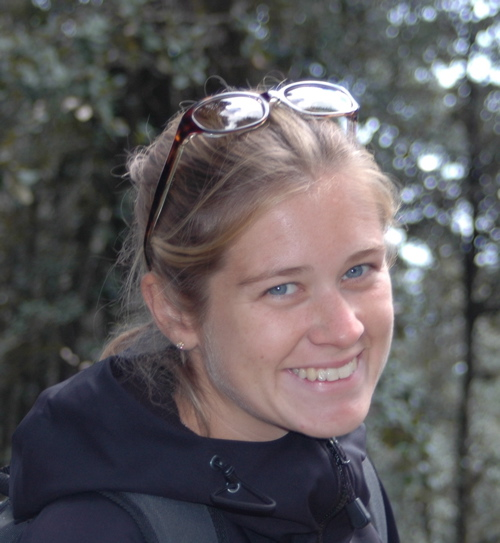

|  |
Emily Manetta, Assistant Professor of Anthropology, received her B.A. from Swarthmore College in Philadelphia and her Ph.D. from the University of California, Santa Cruz in Linguistics. Her current work focuses the syntax of South Asian languages. Her dissertation, based on linguistic field work with a Kashmiri refugee community, featured a comparative analysis of the syntax of questions in Kashmiri and Hindi-Urdu. Dr. Manetta has a strong secondary research interest in the sociolinguistics and syntax of non-standard varieties of English, in particular in her native Appalachia.
Dr. Manetta will be involved in the continuing development of linguistics courses at UVM, teaching Introduction to Syntax, Language and Mind, and Linguistic Anthropology.
For more information on Professor Manetta and her courses/research, please visit her web site.